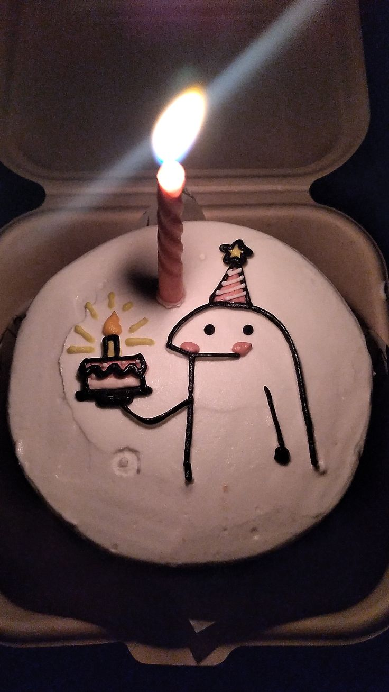

Happy
Birthday
Amer cantik
Hari ini adalah hari yang spesial, karena seseorang yang sangat berarti buatku dilahirkan ke dunia. Dan seseorang itu adalah kamu.

Di hari ulang tahunmu ini, aku ingin mengucapkan sesuatu yang mungkin sederhana,
tapi benar-benar datang dari hati.
Aku senang bisa mengenal kamu, menyayangi kamu, dan mempunyai kamu di dalam hidupku.
Terima kasih untuk setiap perhatian kecil, setiap cerita, setiap tawa,
dan setiap waktu yang kita habiskan bersama. Ada banyak hal tentang kamu
yang mungkin tidak selalu aku ucapkan, tapi selalu aku hargai.
Aku suka cara kamu hadir dalam hidupku. Kamu membuat hari-hari biasa
terasa sedikit lebih berarti, dan hal-hal kecil terasa lebih menyenangkan.
Di usia yang baru ini, aku berharap kamu selalu sehat, bahagia,
dikelilingi hal-hal baik, dan diberikan kemudahan dalam mengejar
apa pun yang kamu inginkan.
Aku juga berharap aku masih bisa menjadi seseorang yang membuatmu merasa
nyaman, didengar, dihargai, dan disayangi.
Kalau aku boleh meminta satu hal, aku ingin kita terus punya banyak cerita
untuk dikenang, banyak tawa untuk dibagi, dan banyak waktu untuk dilewati bersama.
Ada banyak hal yang mungkin tidak bisa aku jelaskan dengan kata-kata. Tapi ada beberapa hal yang selalu ingin aku simpan.
Ketika aku mengenalmu
Aku tidak pernah menyangka bahwa sebuah pertemuan sederhana bisa membawa seseorang yang begitu berarti ke dalam hidupku.
Banyak hal kecil
Obrolan random, tawa, rasa kangen, salah paham, saling mengerti lagi. Semua itu perlahan menjadi bagian dari cerita yang aku sayangi.
Lebih banyak cerita
Aku ingin masih punya banyak hari untuk mengucapkan selamat pagi, menanyakan kabarmu, mendengar ceritamu, dan melihat senyummu.
Aku tidak tahu bagaimana semua hari ke depan akan berjalan.
Mungkin akan ada hari yang tidak selalu sempurna, dan itu tidak apa-apa.
Yang aku harapkan, ketika ada hari yang sulit, kita tetap memilih untuk saling memahami.
Ketika ada salah paham, kita memilih untuk bicara.
Ketika ada jarak, kita tetap mencari jalan untuk merasa dekat.
Menurutku, rasa sayang bukan tentang mencari seseorang yang sempurna.
Rasa sayang adalah ketika kita menemukan seseorang yang tetap ingin kita pilih,
lagi dan lagi, sambil menerima bahwa kita sama-sama punya kekurangan.
Dan sampai sekarang, aku masih ingin memilih kamu. ♡
Selamat ulang tahun, sayang.
Semoga hari ini membuatmu merasa sedikit lebih disayangi,
karena memang itu yang pantas kamu rasakan.
Aku tidak selalu pandai menunjukkan perasaanku,
tapi aku harap kamu bisa merasakannya dari hal-hal kecil yang aku lakukan.
Terima kasih sudah menjadi seseorang yang begitu berarti buatku.
Aku bahagia bisa mengenalmu, dan aku ingin menikmati lebih banyak
hari sederhana bersamamu.
Semoga tahun ini menjadi tahun yang baik untukmu,
dan semoga aku masih ada di banyak momen indah di dalamnya.